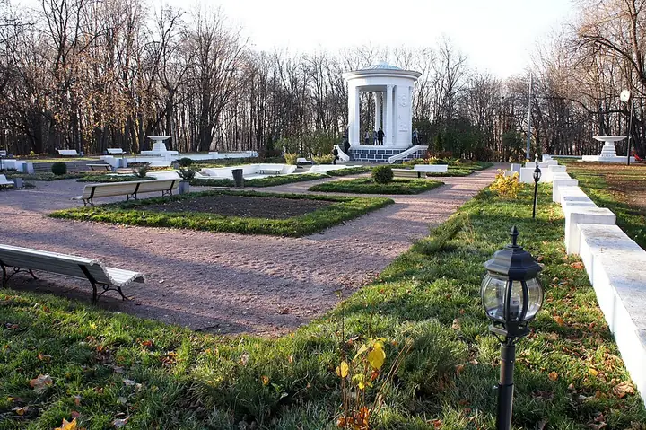

Фото: Akkit, CC BY-SA 3.0 · Wikimedia Commons
Парк · ЦАО
Нескучный сад
Тихая часть Парка Горького: старые деревья, овраги и набережная без толпы.
- ₽ · до 1 500 ₽ на человека
- в 3 планах
Позвать сюда: Нескучный садОткрыть в каталоге: Нескучный садМаршрут до места: Нескучный сад
Адрес и детали
- Адрес
- Пушкинская наб. (Парк Горького)
Открыть на Яндекс Картах (в новой вкладке) - Метро
- м. Ленинский проспект
- Округ
- Центр (ЦАО)
- Цена
- до 1 500 ₽ на человека
Планы с этим местом 3
- Музей «Гараж» · Музей современного искусства · м. Парк культуры
- 25 минут пешкомНескучный сад · Парк
Современное искусство, а потом долгая прогулка вдоль реки в самую тихую часть Парка Горького.
Открыть план: Гараж и Нескучный садПозвать сюда: Гараж и Нескучный сад
Фото: Garage Museum of Contemporary Art, CC BY-SA 4.0 · Wikimedia Commons
- Музей «Гараж» · Музей современного искусства · м. Парк культуры
- 25 минут пешкомНескучный сад · Парк
Современное искусство и книжный в «Гараже», а потом минут 25 пешком через Парк Горького в Нескучный сад — старые деревья, овраги и набережная без толпы.
Открыть план: Гараж и Нескучный садПозвать сюда: Гараж и Нескучный сад
Фото: Garage Museum of Contemporary Art, CC BY-SA 4.0 · Wikimedia Commons
- Нескучный сад · Парк · м. Ленинский проспект
- 22 минуты пешкомColizeum Гагаринский · Компьютерный клуб
Осенняя прогулка по Нескучному саду, а потом 22 минуты пешком до ТРЦ у «Ленинского проспекта»: там Colizeum, один из самых известных клубов сети, по будням дешевле.
Открыть план: Нескучный сад и Colizeum ГагаринскийПозвать сюда: Нескучный сад и Colizeum Гагаринский
Фото: Akkit, CC BY-SA 3.0 · Wikimedia Commons


Похожие рядом


Что ещё рядом

Как позвать
- Выбери план, место или событие — в карточке адрес, цены и маршрут в Яндекс Картах.
- Нажми «Позвать сюда» — соберётся приглашение-игра для свидания или голосование для компании.
- Отправь ссылку в любой мессенджер: тебе ответят, а компания отметит, куда и когда может. Бесплатно и без регистрации.